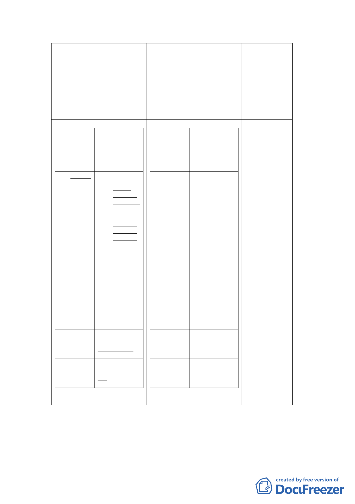

新計畫
伍、事業及財務計畫
公 開闢經 預 備註
共 費（萬 定
設 元）
完
施成
種期
類限
社 754,486 民 本案基地
會 國 社會福利
福 107 設施用
利 年 地、商業
設 區、公園用
施 地及道路
用 用地應以
地 整體規劃
開發方式
辦理為原
則，開發方
式得採設
定地上權
方式，交由
民間廠商
開發興建
與經營管
理（BOT），
或由本府
編列預算
經費開
闢。
公 50,947 配合本計畫商業
園 區、社福用地開
用 闢時程辦理。
地
道 3,500 民
路國
用 105
地年
註：開闢經費及完成期限得
依實際規劃設計情行調整
原計畫
說明
地。
3.因「臺北市建
築物增設室內
公用停車空間
鼓勵要點」已
停止適用，故
配合刪除相關
文字。
伍、事業及財務計畫
配合實際規劃
公 開闢經 預 備註
年期修正。
共 費（萬 定
設 元）
完
施成
種期
類限
社 224,833 民 本案基地
會 國 社會福利
福 101 設施用
利 年 地、商業
設 區、公園用
施 地及道路
用 用地應以
地 整體規劃
開發方式
辦理為原
則，開發方
式得採設
定地上權
方式，交由
民間廠商
開發興建
與經營管
理（BOT），
或由本府
編列預算
經費開
闢。
公 50,947 民
園國
用 99
地年
道 999
民
路國
用 99
地年
五、 全案係市府102年12月23日府都規字第10239599703號函送
到會，並自102年12月24日起公開展覽30日。
- 16 -